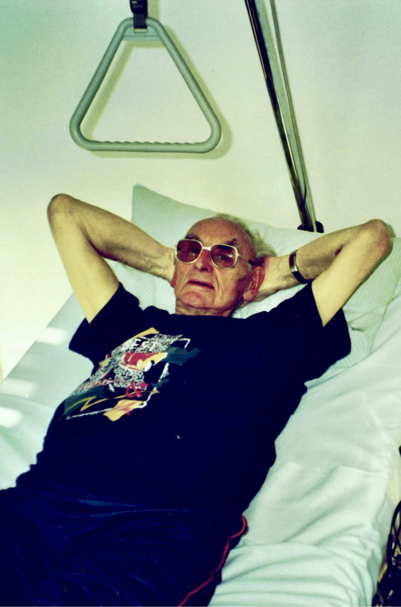
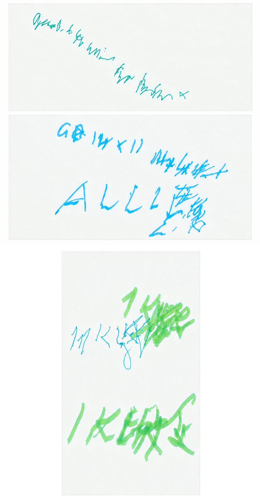
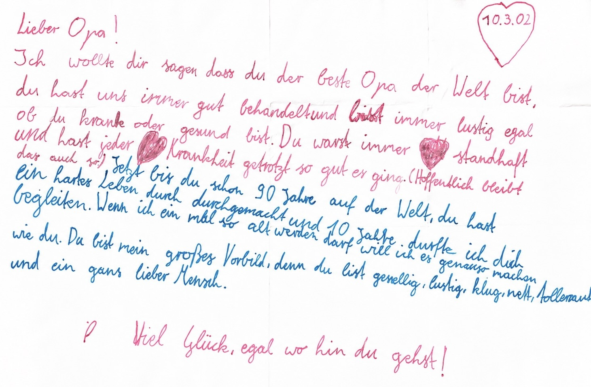
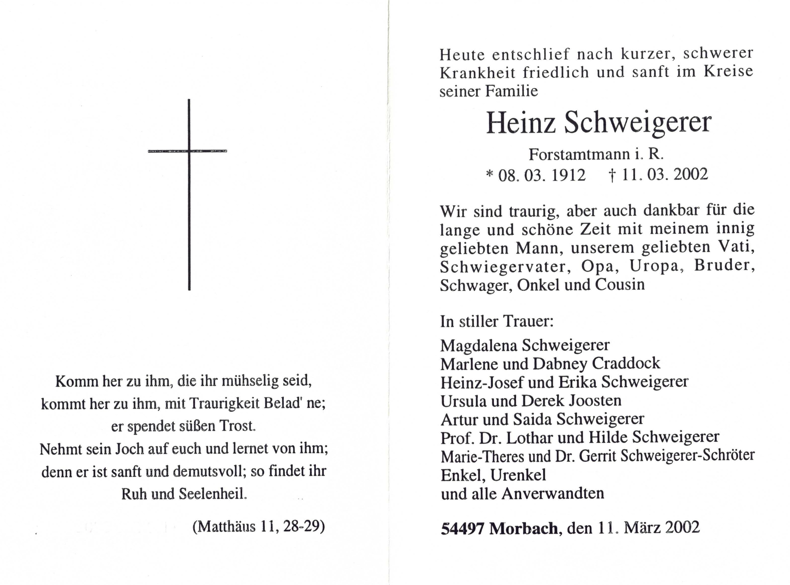

Mein Vater wollte immer das Jahr 2000 erleben. Das schaffte er. Er lebte bescheiden und achtete auf sich, besonders nach einem Herzinfarkt einige Jahre zuvor. Er nahm bewusst ab und wurde ziemlich hager. Im Herbst 2001 klagte er immer wieder über Schweißausbrüche, vor allem während und nach dem Essen. Er nahm das zunächst nicht weiter ernst. Schließlich war er intensiv mit den Vorbereitungen für die Diamantene Hochzeit am 27. Dezember beschäftigt. Und danach stand schon das nächste große Ereignis bevor: sein 90. Geburtstag im März 2002.
Mein Vater war gut im Organisieren von Veranstaltungen. Er war Touristikleiter beim örtlichen ADAC-Club und Präsident des Karnevalvereins gewesen. Feste zu veranstalten lag ihm. Vielleicht hatte er das von seiner Mutter geerbt. Die Schumachers waren Wirtsleute, und dort wurde gerne im großen Familienkreis gefeiert, gesungen, musiziert und gescherzt. Einiges davon hat sich bei uns Kindern erhalten.
Die Diamantene Hochzeit organisierte mein Vater weitgehend selbst. Gefeiert wurde im Hotel Rahn, vielleicht zweihundert Meter von unserem Elternhaus entfernt. Ulli reiste mit ihren Kindern eigens aus Kalifornien an. Wir sechs Kinder waren da, dazu die inzwischen stattliche Schar der Enkelkinder. Genau so mochten es meine Eltern. Sie hatten gerne viele Menschen und vor allem viele Kinder um sich herum.
In den Tagen um Weihnachten kam bei meinem Vater allerdings ein weiteres Symptom hinzu: Durchfall. Schon der kurze Weg zum Essen im Hotel Rahn wurde deshalb beschwerlich. Aber mein Vater tat das als Darmgrippe ab. Am 27. Dezember wurde gefeiert. Es war eine schöne Feier, und natürlich hielt mein Vater eine Ansprache. Das tat er gerne. Er bedachte jedes seiner Kinder mit einem Kompliment, aber irgendetwas war anders als sonst. Er wirkte nicht mehr so souverän wie bei früheren Ansprachen, schwächelte etwas, brachte aber alles mit Bravour hinter sich.
An Silvester folgte gleich die nächste große Sause. Wir feierten mit etwa fünfzig Personen in der Ausstellungshalle von Hubert, dem Schwager meines Bruders Heinz-Josef. Wieder waren fast alle da, und meine Eltern genossen es. Am 4. Januar ging es weiter. Mein Schwager Dabney feierte seinen 84. Geburtstag, wir fuhren in die Pfalz und hatten noch einmal eine große und lustige Familienfeier.
Einige Tage später verfärbte sich die Haut meines Vaters. Er wurde gelb. Als Mediziner wusste ich, was das bedeutete: ein Gallestau. Das erklärte auch einiges von dem, was in den Wochen zuvor passiert war. Meist steckt hinter einem solchen Gallestau ein Gallenstein, allerdings fehlten die typischen Koliken. Ich nahm meinen Vater kurzerhand mit nach Essen, wo ich damals als Oberarzt an der Kinderklinik arbeitete, und übergab ihn den Internisten. Das CT zeigte ein ausgedehntes Gallengangskarzinom. Angesichts der Ausdehnung des Tumors und seines Alters kamen weder eine große Operation noch eine Chemotherapie infrage. Ich besprach die schlechte Prognose mit meinen Eltern, und wir einigten uns mit den Internisten auf eine Maßnahme, die wenigstens seine Beschwerden lindern sollte. Es wurde eine Yamakawa-Drainage gelegt, über die die Gallenflüssigkeit durch einen dünnen Schlauch nach außen abgeleitet wurde. Die Prozedur gelang und der Gallestau verschwand.

Mein Vater war trotzdem sehr schwach. Ich besuchte ihn jeden Morgen vor meinem Dienst; die Innere Medizin lag direkt gegenüber unserer Kinderklinik. Einmal beobachtete ich ihn, während ich ihn rasierte. Er hatte kaum noch die Kraft dazu und sah so leidend aus, dass ich hätte losheulen können. Das tat ich natürlich nicht. Mir war als Arzt klar, was die Diagnose bedeutete. Meinem Vater war dagegen zunächst nicht vollständig bewusst, dass die Drainage nur den Gallestau beseitigte und nicht den Krebs. Er setzte Hoffnung in diese neue Errungenschaft. Erst später begriff er, dass sein Leben zu Ende gehen würde.
Ich erinnere mich an die Fahrt nach der Entlassung vom Krankenhaus zu unserem Haus in Essen-Borbeck. Ich spielte Orgelmusik, die er immer sehr geliebt hatte. Diesmal wollte er sie nicht hören. Sie machte ihn traurig. Ich sollte lieber etwas Fröhliches anmachen.
Nach einigen Tagen stand die Rückfahrt nach Morbach an. Meine Schwester Marlene holte ihn ab. Wir hatten Mühe, ihn ins Auto zu bekommen. Meine Mutter war wie immer dabei. Schließlich fuhren sie los, und ich sah dem Wagen nach. Ich wusste, dass dies sein Abschied von Essen war. Er würde nie mehr zurückkommen. Er fuhr nach Morbach, um zu Hause zu sterben.
In den nächsten Wochen baute mein Vater immer weiter ab. Wir fuhren so oft wie möglich nach Morbach, wo er im Schlafzimmer meiner Eltern lag, im gleichen Bett, in dem viele Jahre zuvor sein eigener Vater gestorben war. Er hatte einen guten Hausarzt, der ihn mit allem Notwendigen versorgte, auch mit starken Schmerzmitteln. Die Gallendrainage musste regelmäßig gespült werden. Wenn ich da war, machte ich das. Ich erinnere mich an die Schmerzen, die er dabei hatte. Es war schwer auszuhalten, gerade weil ich selbst derjenige war, der ihm diese Schmerzen zufügen musste.
Mein Vater hatte aber noch ein Ziel: seinen 90. Geburtstag am Freitag, dem 8. März 2002. Alle sollten kommen. Meine Schwester Ulli war inzwischen wieder in den USA und setzte sich kurzerhand erneut ins Flugzeug. So waren wir am 8. März noch einmal als Großfamilie zusammen. Mein Vater konnte inzwischen nicht mehr gehen, aber er saß in seinem Sessel und bekam alles mit. Seine Forst- und Jagdkollegen kamen und bliesen ihm auf ihren Jagdhörnern ein Ständchen. Dann kam die Verwandtschaft, darunter seine Brüder Klaus und Rudi. Als Rudi ins Zimmer kam, strahlte er. Er war überglücklich und freute sich wie ein kleines Kind. Rudi dagegen musste bitterlich weinen. Der Anblick seines bis auf die Knochen abgemagerten Bruders überwältigte ihn.
Nach dem Geburtstag ging es rasch bergab. Am Wochenende konnte mein Vater nicht mehr richtig schlucken, und ich musste ihm den Speichel absaugen. Dabei saugte sich einmal die Spitze des Kunststoffkatheters an seiner Wange fest und verursachte ihm einen furchtbaren Schmerz. Es war im Grunde nur ein kleiner Zwischenfall in diesen Tagen, aber ich habe ihn nie vergessen und mir lange Vorwürfe deswegen gemacht. Inzwischen bekam mein Vater auf meine Bitte hin Morphium über eine Dauerinfusion. Die Schmerzen kamen nicht nur vom Tumor. Sein Kreislauf begann zunehmend zu versagen, die Durchblutung der Extremitäten wurde schlechter, und auch das kann beim Sterben Schmerzen verursachen. Es ging jetzt nur noch darum, ihm diese Zeit so erträglich wie möglich zu machen.

Am Sonntag konnte mein Vater nicht mehr sprechen. Gegen Mittag hatte er aber offensichtlich ein wichtiges Anliegen. Wir gaben ihm Papier und einen Stift und sagten ihm, er solle aufschreiben, was er uns sagen wollte. Seine Hand zitterte stark, und wir hatten Mühe, seine Schrift zu entziffern. Um 12.05 Uhr schrieb er: „Bleibt bei Mutti. Alle Kinder.“ Zehn Minuten später schrieb er: „Geht ins Wohnzimmer. Alle zusammen feiern.“ Das taten wir. Wir setzten ihn in seinen Sessel und verbrachten die Zeit gemeinsam. Um 13.25 Uhr wollte er uns noch einmal etwas mitteilen und schrieb mit großer Mühe: „Ein kleiner Whiskey.“ Er wollte ein letztes Mal mit uns anstoßen. Meine Mutter war dagegen, aber diesmal setzte sie sich nicht durch. Wir tranken mit ihm einen Whiskey. Das passte zu meinem Vater. Wenn das Leben nach neunzig Jahren zu Ende ging, konnte man auch darauf anstoßen.
Am Sonntagabend mussten Hilde und ich entscheiden, ob wir in Morbach bleiben oder nach Essen zurückfahren sollten. Ich musste am nächsten Morgen arbeiten, und niemand konnte sagen, ob der Sterbeprozess noch Tage oder vielleicht Wochen dauern würde. Meine Geschwister waren alle vor Ort. Wir vereinbarten, dass sie mich sofort anrufen sollten, wenn es dem Ende zuging, und fuhren nach Essen zurück.
Am Montagmorgen kam der Anruf. Wir sollten uns ins Auto setzen und so schnell wie möglich kommen. Für die Strecke von Essen nach Morbach brauchten wir ungefähr zwei Stunden. Als wir ankamen, lebte mein Vater noch, sein Bewusstsein war aber bereits deutlich eingeschränkt. Meine älteren Schwestern saßen ihm gegenüber auf dem Doppelbett. Meine Mutter saß neben ihm und hielt seine Hand. Sie war gefasst und ruhte in sich. Irgendwann zog mein Vater seine Hand aus ihrer. Ich hatte den Eindruck, dass er jetzt für sich sein wollte. Diesen letzten Teil des Weges wollte er allein gehen.
Trotzdem waren wir alle bei ihm. Alle sechs Kinder, meine Mutter und viele Enkelkinder. Eigentlich war es genau die Gesellschaft, die mein Vater sein ganzes Leben lang am liebsten um sich gehabt hatte. Ich erinnere mich an das Bild, als läge dort ein alter Hirte mit seiner Herde um sich herum.
Jan hatte einen Brief für seinen Großvater geschrieben. Er setzte sich zu ihm und las ihn vor. Mein Vater war noch etwas bei Bewusstsein, und ich hatte den Eindruck, dass er verstand, was Jan ihm sagte. Etwa eine Stunde später wurde seine Atmung zunehmend schwer. Er rang er nach Luft. In seiner Infusion war ausreichend Morphium, und ich erhöhte die Tropfrate, sodass ein stetiger Infusionsfluss gewährleistet war. So konnte ich ihm den Todeskampf erleichtern.

Nach etwa einer Viertelstunde bäumte mein Vater sich plötzlich noch einmal auf. Er hob den Oberkörper, breitete die Arme aus und öffnete die Augen. Sein Gesicht veränderte sich. Es sah für mich so aus, als würde er etwas sehen, vielleicht ein helles Licht. Auf seinem Gesicht lag plötzlich ein Ausdruck von überwältigendem Glück. Dann sank er zurück und war tot.
Es war Montagmittag, der 11. März 2002, drei Tage nach seinem 90. Geburtstag. Die Sonne strahlte vom Himmel. Es war ein schöner Tag für einen Abschied.
